Потенциал сомы и фактические входные импульсы
Восемь сохранённых моделей,16 новых процессов на двух runtime. Входные импульсы и потенциалы побайтно совпали во всех8 парах. Показаны12 overview всех сом и4 zoom новой версии; полные отчёты обеих версий остаются в кэше M40. Это один объявленный транспортный паттерн на модель, не классификационная матрица. События LT-spike этим протоколом не записаны. SI единицы потенциала не подтверждены. Все отсчёты сохранены. Все16 оригиналов просмотрены в исходном размере: заголовки, оси, легенды и формы ответа читаемы. Протокол просмотра. Init/Reset выполняется перед новым процессом; внутри окна генератор непрерывно повторяет объявленную пачку, без Reset между повторами. Соединение отсчётов линиями не измеряет субшаговую задержку.
Owner01 | $.Soma1.SumPotential | overview | Branch_2000_N0_learned_boundary_recognition_4_owner_burst_003_owner_recognition_state.json
Оригинал1920×960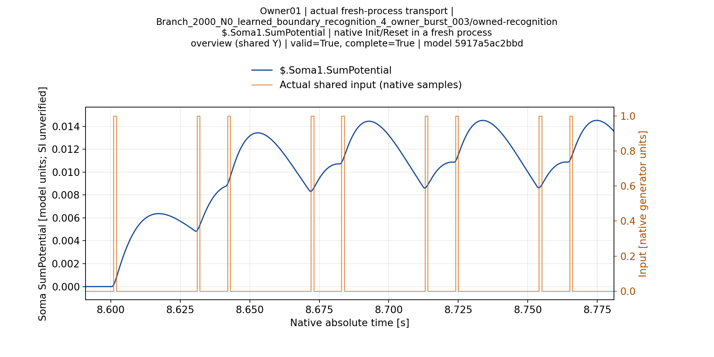
Owner02 | $.Soma1.SumPotential | overview | Branch_2000_N1_learned_boundary_configured_recognition_8_owner_burst_003_owner_recognition_state.json
Оригинал1920×960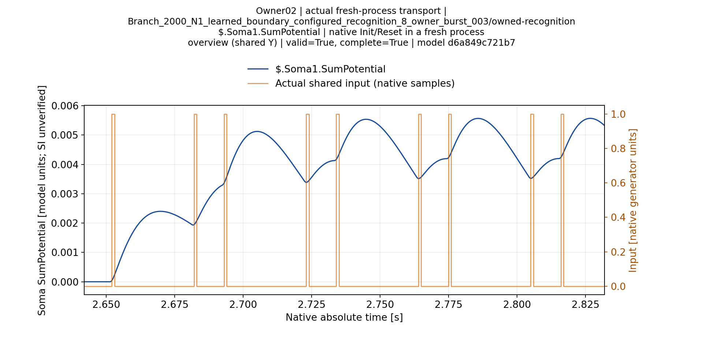
Owner02 | $.Soma1.SumPotential | zoom-001 | Branch_2000_N1_learned_boundary_configured_recognition_8_owner_burst_003_owner_recognition_state.json
Оригинал1920×960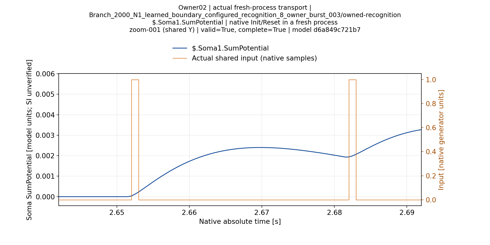
Owner03 | $.Soma1.SumPotential | overview | Branch_2000_N1_learned_boundary_configured_recognition_8_owner_burst_003_spiking_owner_recognition_state.json
Оригинал1920×960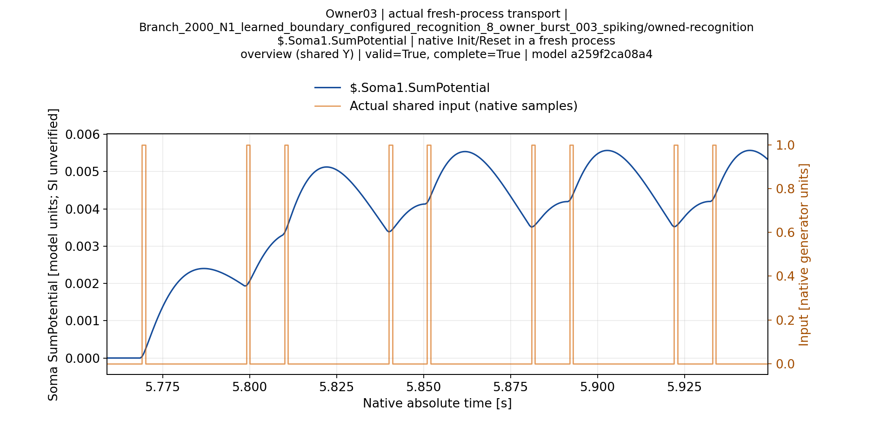
Owner03 | $.Soma1.SumPotential | zoom-001 | Branch_2000_N1_learned_boundary_configured_recognition_8_owner_burst_003_spiking_owner_recognition_state.json
Оригинал1920×960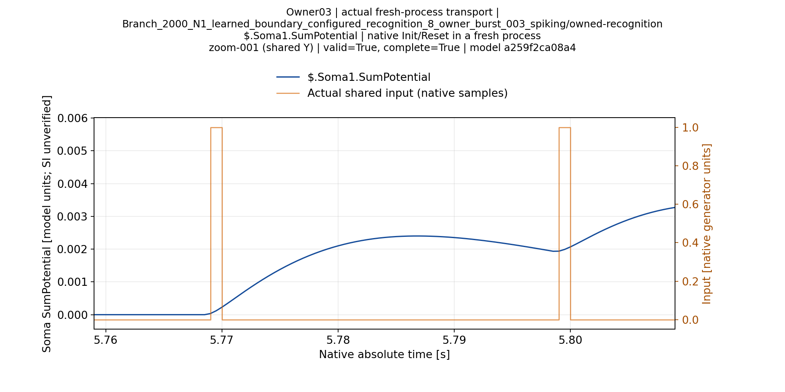
Owner04 | $.Soma1.SumPotential | overview | Branch_2000_N1_learned_boundary_recognition_4_owner_burst_003_owner_recognition_state.json
Оригинал1920×960Owner05 | $.Soma1.SumPotential | overview | Classic_2000_N0_learned_boundary_configured_recognition_7_owner_burst_003_owner_recognition_state.json
Оригинал1920×960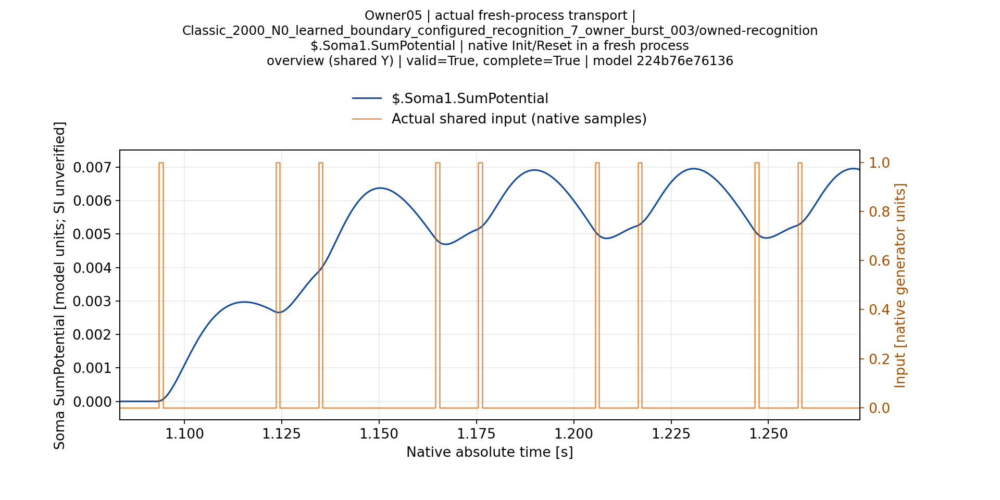
Owner05 | $.Soma2.SumPotential | overview | Classic_2000_N0_learned_boundary_configured_recognition_7_owner_burst_003_owner_recognition_state.json
Оригинал1920×960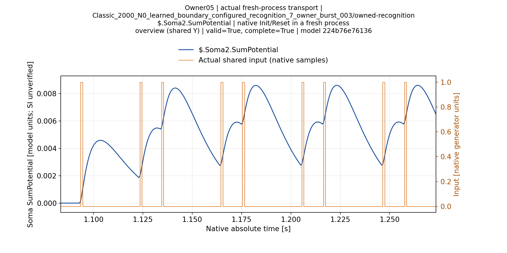
Owner06 | $.Soma1.SumPotential | overview | Classic_2000_N0_learned_boundary_configured_recognition_7_owner_burst_003_spiking_owner_recognition_state.json
Оригинал1920×960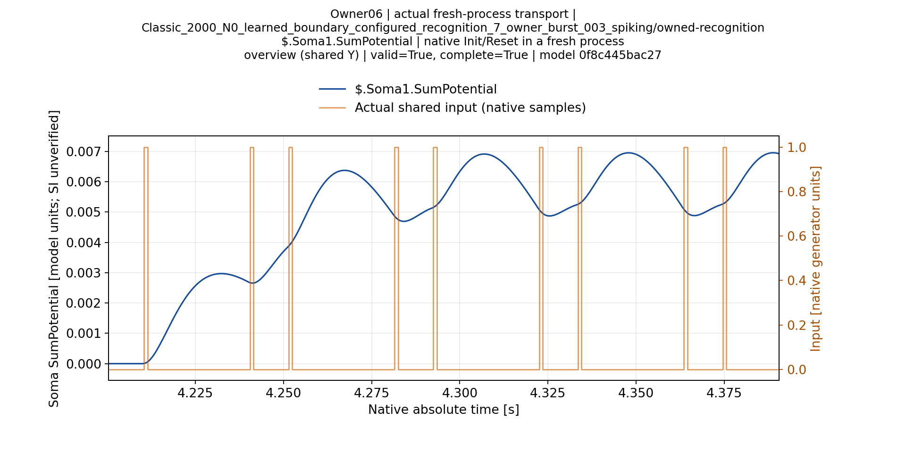
Owner06 | $.Soma1.SumPotential | zoom-001 | Classic_2000_N0_learned_boundary_configured_recognition_7_owner_burst_003_spiking_owner_recognition_state.json
Оригинал1920×960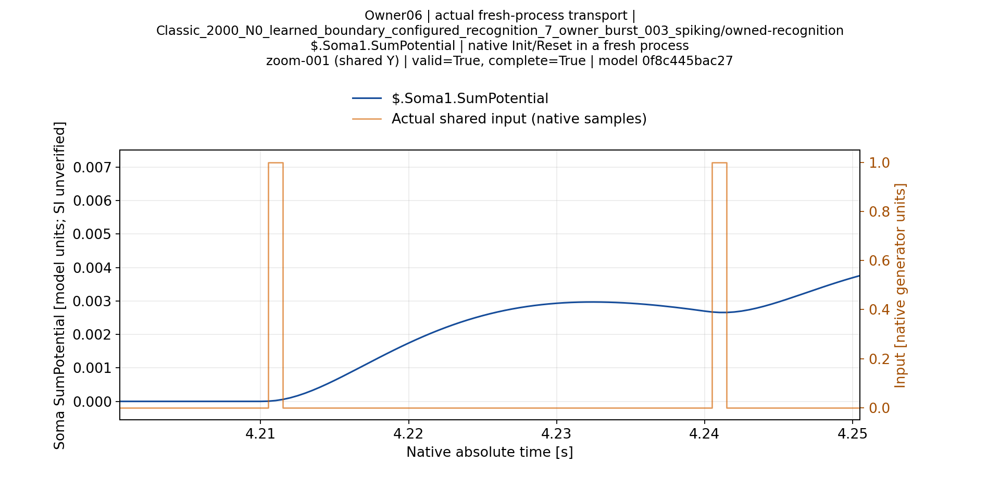
Owner06 | $.Soma2.SumPotential | overview | Classic_2000_N0_learned_boundary_configured_recognition_7_owner_burst_003_spiking_owner_recognition_state.json
Оригинал1920×960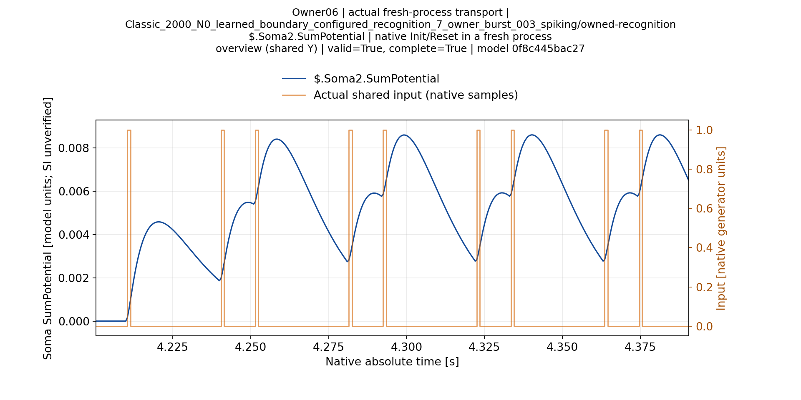
Owner07 | $.Soma1.SumPotential | overview | Classic_2000_N0_learned_boundary_recognition_4_owner_burst_003_owner_recognition_state.json
Оригинал1920×960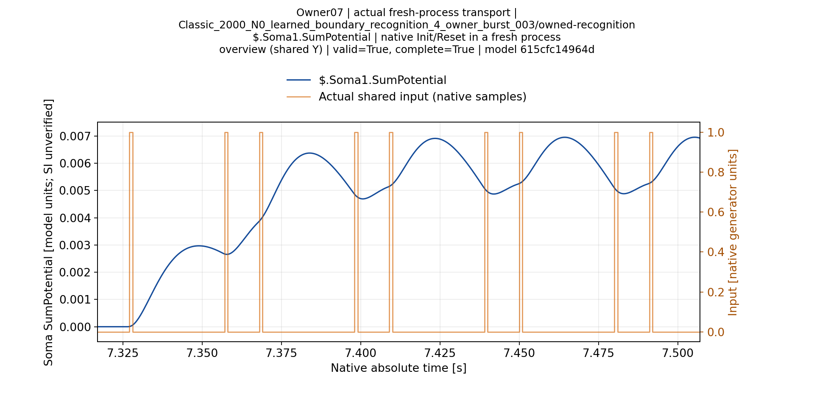
Owner07 | $.Soma2.SumPotential | overview | Classic_2000_N0_learned_boundary_recognition_4_owner_burst_003_owner_recognition_state.json
Оригинал1920×960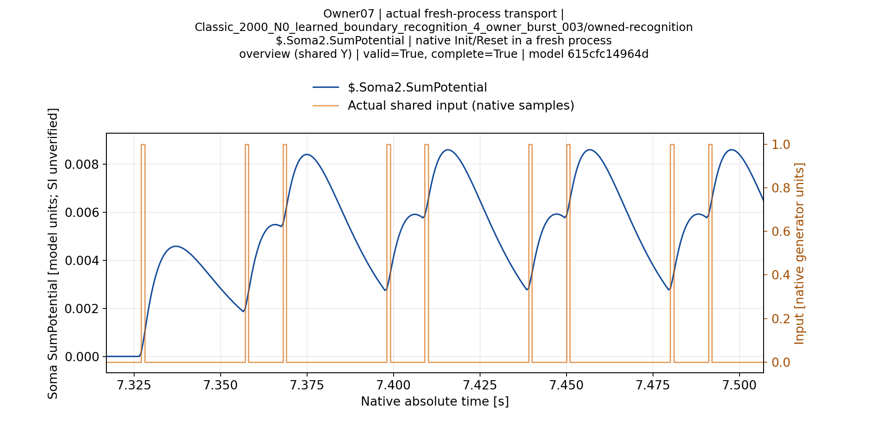
Owner08 | $.Soma1.SumPotential | overview | Classic_2000_N1_learned_boundary_recognition_4_owner_burst_003_owner_recognition_state.json
Оригинал1920×960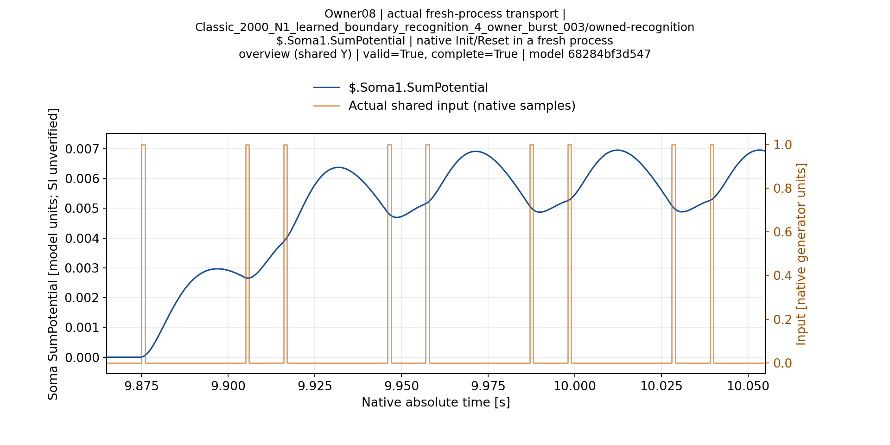
Owner08 | $.Soma1.SumPotential | zoom-001 | Classic_2000_N1_learned_boundary_recognition_4_owner_burst_003_owner_recognition_state.json
Оригинал1920×960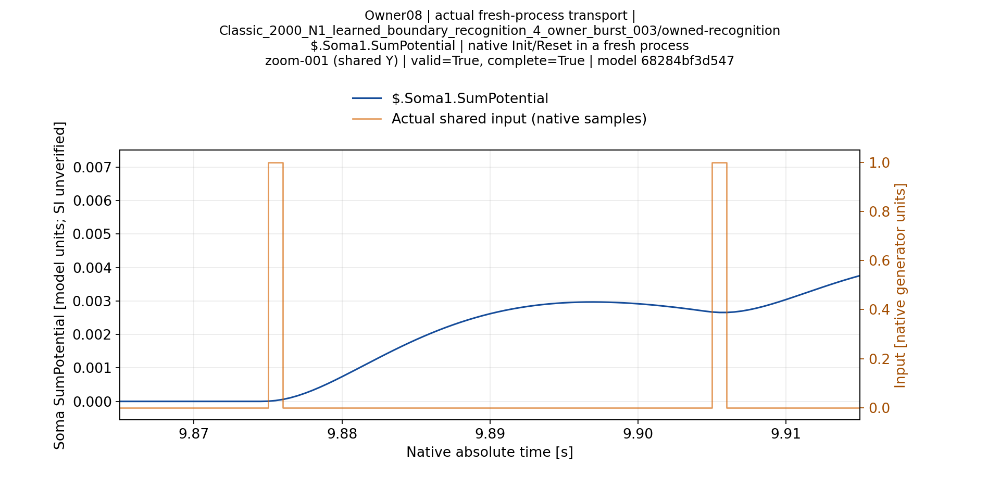
Owner08 | $.Soma2.SumPotential | overview | Classic_2000_N1_learned_boundary_recognition_4_owner_burst_003_owner_recognition_state.json
Оригинал1920×960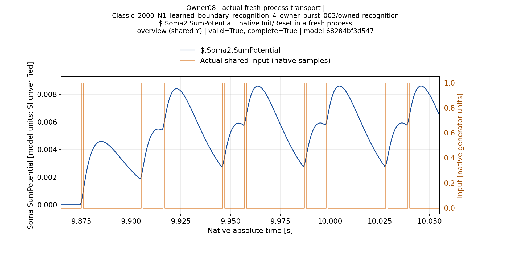